# 3d scanning & photogrammetry
# ---------------------------------
After some trouble trying to get the in-classroom scanner to work, Aaron, Finn, and I decided to split a membership for Polycam, which markets itself as the "leading 3D capture application for iPhone... generat[ing] scans of spaces with the LiDAR sensor." With only a series of photos taken around the object, I scanned my Sony camera and lens to an impressive result, despite the slight mis-scan of the cap-tip.

That said, upon importing the image into a STL file on the PrusaSlicer, there were more noticeable, obvious issues, including sizing (scan not fit to size), not properly printing the bottom of the camera (uncaptured in the photos), as well as some additional grain, which happened to be splattered all over the slicer. For simpler scans, Polycam might be a great go-to option, though for more intricate scans, the in-classroom scanner might be the way to go.
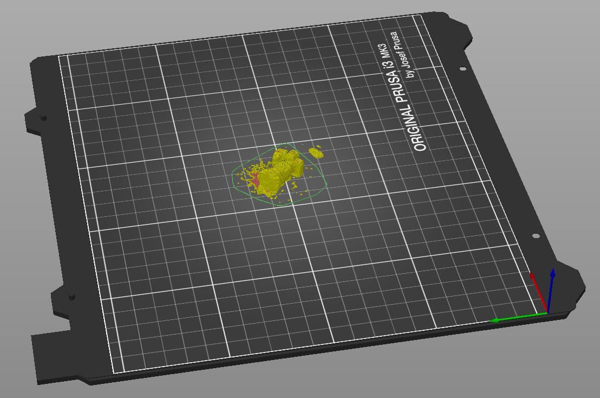
# 3D design & printing
# ---------------------------------
Inspired by a 3D “wigglegram” lens I found online first ideated and created by George Moua in 2021 (via a kickstarter project that currently does not print lenses anymore, I decided to build my own "wigglegram" camera with three used disposable camera lenses to accompany my Sony camera.
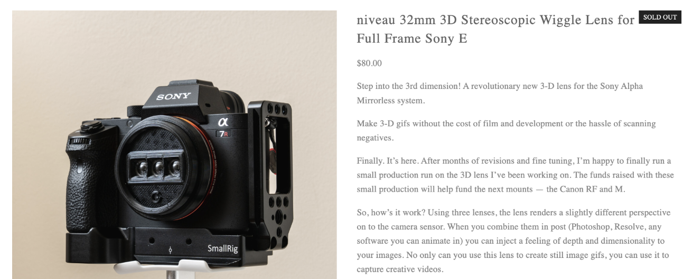
I started off by referencing existing open-sourced versions of the wigglegram camera, including this version on Printables by Alex Fiel. However, this model had its shortcomings: the lenses had to be trimmed given the tight cylindrical framing of the print and then either hot-glued to the edges or superglued.
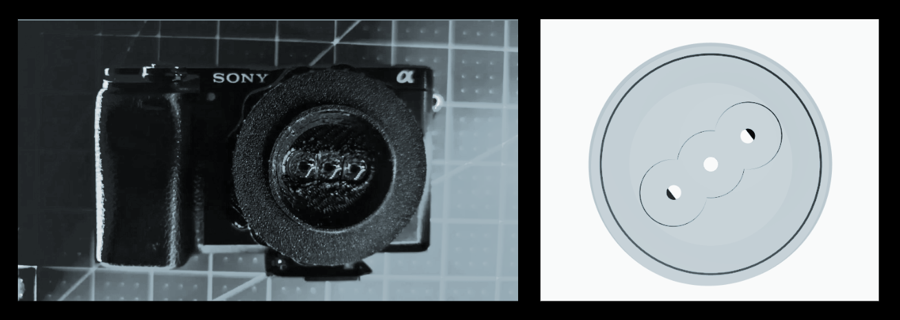
Loosely based on this mechanism, but recognizing the issues, I set out to build my own better version (STL file). Modeling out the wigglegram lens was quite straightforward: one lens front (thinner cylinder) and one lens retainer (thicker cylinder) — both of which, tightened by four 2mm screws, would hold three disposable lenses in place. This would be supplanted by a mount that was measured with dimensions so as to be compatible with the Sony Alpha series. Getting the right measurements and modeling out the lens mount was the most difficult part.
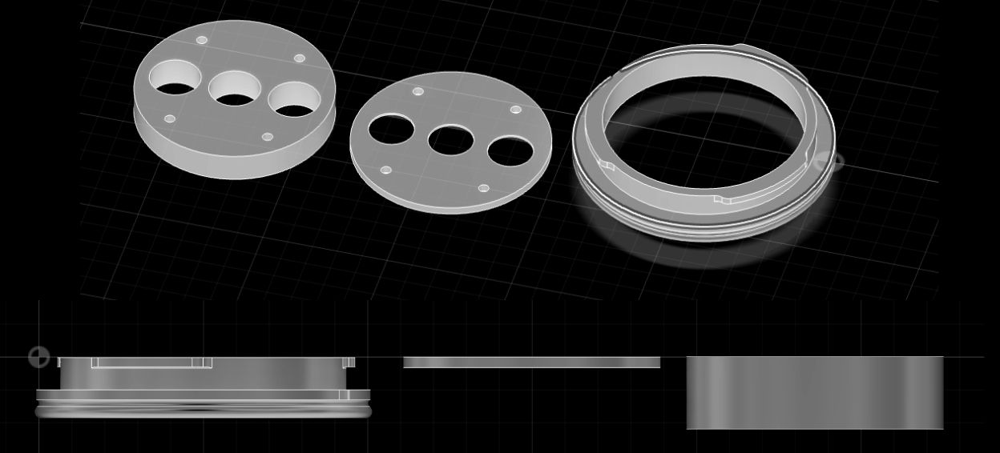
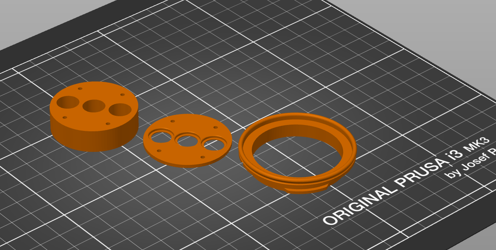
During the 3D printing process itself, I learned the importance of enabling supports (and brim), even though the supports may sometimes result in a hassle to take apart. After taking apart the disposable cameras, I assembled them with the lens mount.
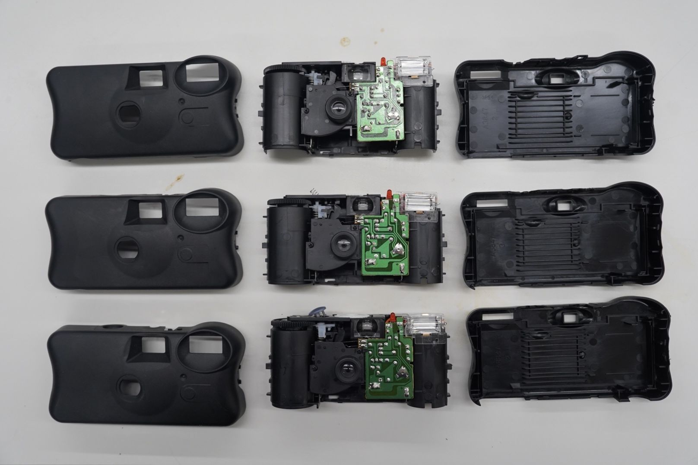
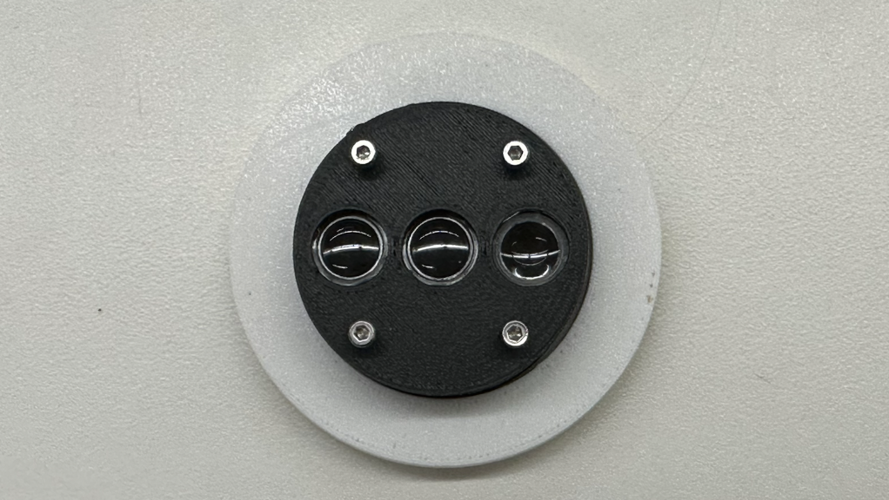
These are images I took with this lens on my Sony camera (shoutout to Aaron for being a good model):
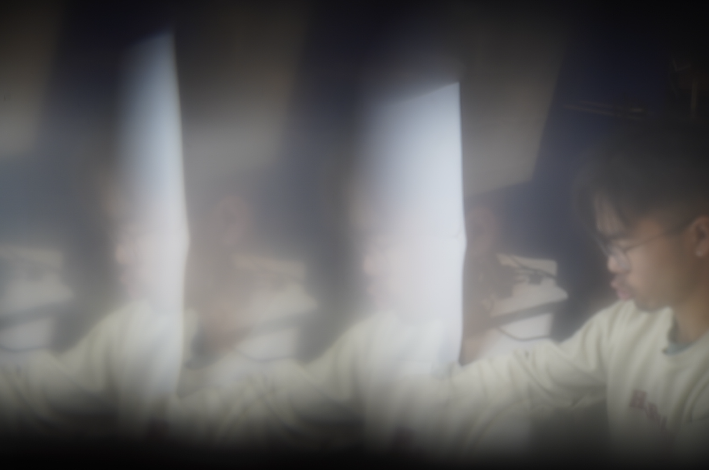
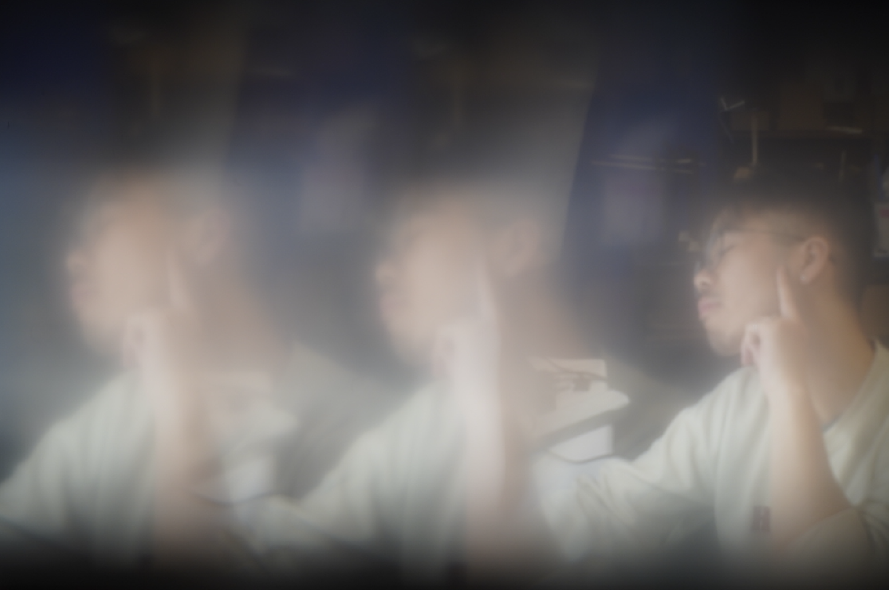
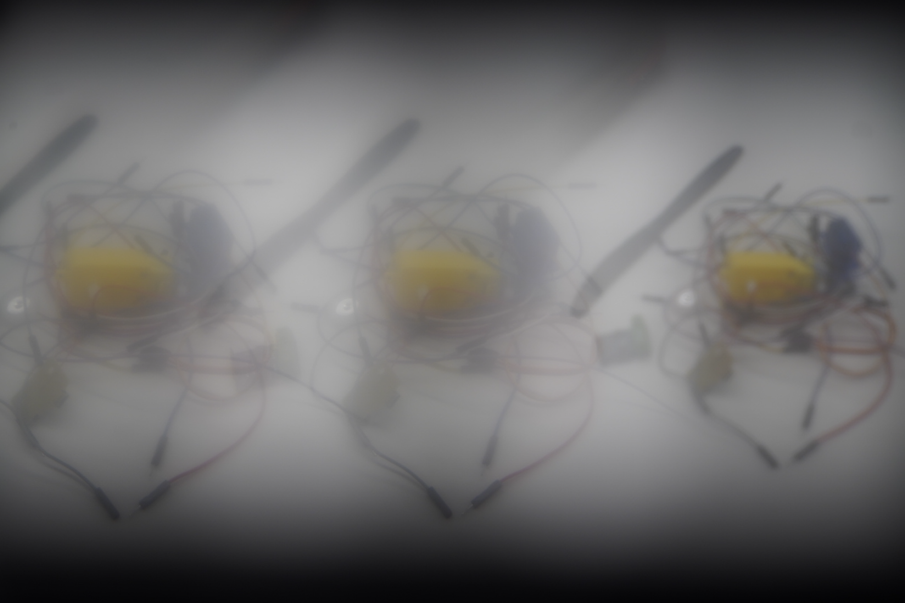
Perhaps I hadn’t properly cleaned/spaced/added distance the three blockers to the point at which the images were instead filtered in an intriguing way, though not split the way I initially envisioned. I could play around more with the design, and hopefully get the original concept to work. As next steps, I can also add on a focus lens (a tab that allows me to zoom in and out, adjusting manual focus) and aperture adjustment.
I also had some trouble getting the lens mount to lock properly on my Sony; although it fit, it did not lock, which meant that I could still take photos on it, but I'd have to hold it up.
For fun, I also printed a low-poly totodile from Thingiverse:
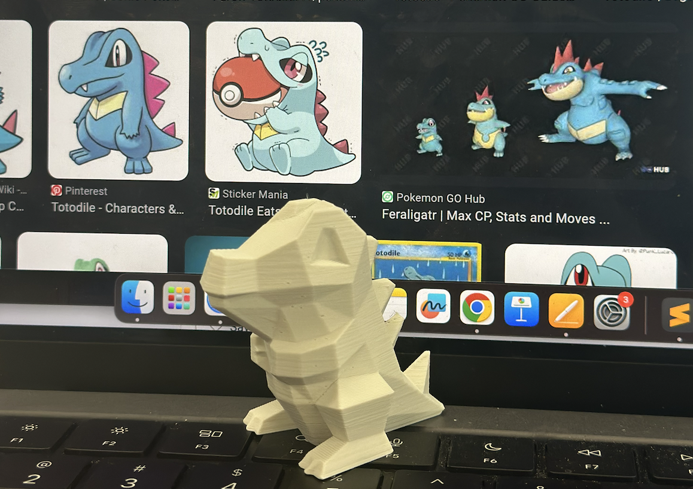
# final project ideation
# ---------------------------------
To be honest, I think I've grown out of the initial wellness kit idea I've proposed (e.g. humidifier, sauna, etc.) — existing options are already relatively cheap and abundant. I spent a good chunk of this week looking at other arduino & 3dprinting-involved photography projects, including this 3D printed film video camera by Joshua Bird who also built his own version of the wigglegram lens. That said, going through his page made me think this might be too expensive and a not-worth-it project.
Given this pivot, I'll be spending this weekend figuring this out (and designing initial models) in time for labs next week!